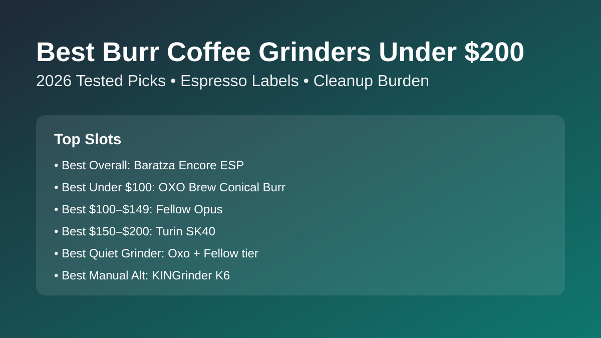

Best Burr Coffee Grinder Under $200 (2026): 6 Top Picks Tested
The best burr coffee grinder under $200 for most people is Baratza Encore ESP: consistent enough for pour over and capable enough for entry espresso without premium-tier pricing. We compared six popular options by grind quality, retention/static, daily cleanup, and value so you can buy once and stop chasing upgrades.

Quick answer: Buy Baratza Encore ESP for all-around value. OXO Brew Conical Burr is the best under $100 pick, Fellow Opus is the best $100-$149 balance, and Turin SK40 is the best $150-$200 pick if espresso is a priority.
TL;DR winner box
Best overall under $200: Baratza Encore ESP
Best under $100: OXO Brew Conical Burr Grinder
Best $100-$149: Fellow Opus
Best $150-$200: Turin SK40
Best manual alternative: KINGrinder K6
Comparison table
Prices checked: March 2026
| Product | Best for | Grinder type | Brew format | Capacity | Key settings | Cleanup effort | Price band | Espresso-capable | Check price |
|---|---|---|---|---|---|---|---|---|---|
| Baratza Encore ESP | Best overall under $200 | Burr (conical) | Filter + Espresso | 8 oz hopper | 40 steps, high-resolution espresso zone | Low | $$ | Yes | Check price |
| OXO Brew Conical Burr | Best under $100 | Burr (conical) | Filter | 12 oz hopper | 15 settings + micro positions | Low | $ | Borderline | Check price |
| Fellow Opus | Best $100-$149 balance | Burr (conical) | Filter + Espresso | 3.5 oz dosing lid | 41 steps, inner micro-adjustment ring | Medium | $$ | Yes | Check price |
| Turin SK40 | Best $150-$200 for espresso | Burr (conical) | Filter + Espresso | Single-dose (bellows) | Stepless style collar, low-retention workflow | Medium | $$$ | Yes | Check price |
| Capresso Infinity Plus | Best for simple daily drip | Burr (conical) | Filter | 8.8 oz hopper | 16 settings, timer dial | Low | $ | No | Check price |
| KINGrinder K6 (manual) | Best manual alternative | Burr (manual conical) | Filter + Espresso | 30-35 g dose | External click adjustment, fine espresso steps | Low | $ | Yes | Check price |
Borderline note: OXO Brew can grind fine, but stepped adjustment limits repeatable espresso dialing.
How we evaluate
We score each grinder on brew quality, grinder consistency, usability, cleaning burden, and value for money. Under-$200 picks get extra weight for retention/static behavior because messy grinders quickly become shelf ornaments.
Budget-tier winners
- Best under $100: OXO Brew Conical Burr — easiest low-cost step up from blade grinders with dependable filter range performance.
- Best $100-$149: Fellow Opus — strongest blend of filter clarity and entry-espresso capability in the mid-budget slot.
- Best $150-$200: Turin SK40 — best pick when you want single-dose workflow and stronger espresso control without crossing $200.
Product reviews by use-case
1) Baratza Encore ESP — Best Overall Burr Grinder Under $200
Verdict: Best for most home brewers who need one grinder for both filter coffee and occasional espresso.
Pros
- Excellent grind consistency for this price bracket.
- Espresso zone gives useful control without overwhelming beginners.
- Repairable ecosystem and easy-to-source replacement parts.
Cons
- Louder than premium quiet grinders.
- Some retention without single-dose workflow habits.
Key specs: Conical burr · 40 grind steps · 8 oz hopper · on/off + pulse operation · Espresso-capable: Yes.
Why it wins this slot: It is the safest all-round pick for buyers who do not want to outgrow a sub-$200 grinder too quickly.
Retention/static note: Moderate static in dry weather; quick RDT spray plus a tap keeps retention manageable.
2) OXO Brew Conical Burr — Best Under $100
Verdict: Best for budget buyers focused on drip, pour over, and French press consistency.
Pros
- Consistent filter-range performance at entry pricing.
- Simple dial and hopper workflow for daily use.
- Low cleanup burden with straightforward grounds bin.
Cons
- Not ideal for repeatable espresso dialing.
- Can scatter static-charged fines in very dry rooms.
Key specs: Conical burr · 15 settings + micro positions · 12 oz hopper · timer-based dose · Espresso-capable: Borderline.
Why it wins this slot: It brings real burr consistency below $100 without major workflow headaches.
Retention/static note: Retention stays low, but static spray can increase with dark roasts unless you lightly mist beans.
3) Fellow Opus — Best $100-$149 Balance
Verdict: Best for buyers who split time between pour over and entry-level espresso and want one compact grinder.
Pros
- Wide grind range that can span filter to espresso.
- Smart anti-static design reduces mess versus older budget grinders.
- Small footprint and clean kitchen-friendly design.
Cons
- Micro-adjustment system has a learning curve.
- Cleanup is moderate because fines can gather around chute edges.
Key specs: 40mm conical burrs · 41 grind settings with inner ring micro-adjust · 110g load bin · timed grinding · Espresso-capable: Yes.
Why it wins this slot: It gives more range and cleaner workflow than most grinders in the same mid-budget tier.
Retention/static note: Low retention for a hopper grinder, with occasional static popcorning when beans are very light roasted.
4) Turin SK40 — Best $150-$200 for Espresso
Verdict: Best for espresso-first buyers who want stepless-style control and low-retention single-dosing under $200.
Pros
- Fine adjustment control for dialing espresso shots.
- Single-dose workflow with bellows helps keep exchange low.
- Strong value compared with pricier espresso-focused grinders.
Cons
- Less beginner-friendly than simple click-dial grinders.
- Cleanup is moderate due to bellows and dosing routine.
Key specs: 40mm stainless steel conical burrs · stepless adjustment collar · tilted single-dose base with bellows · low-retention workflow · Espresso-capable: Yes.
Why it wins this slot: It delivers the strongest espresso control under $200 without requiring a premium grinder budget.
Retention/static note: Bellows keeps retention very low; static is mild and usually concentrated in the cup lip.
5) Capresso Infinity Plus — Best Simple Drip Workflow
Verdict: Best for households that brew drip coffee daily and want no-fuss controls and easy cleaning.
Pros
- Very easy timer-and-go routine for batch brewers.
- Quiet enough for shared kitchens in early mornings.
- Affordable and widely available.
Cons
- Not suitable for true espresso grinding.
- Limited precision compared with newer competitors.
Key specs: Conical burr · 16 settings · 8.8 oz hopper · timer dial · Espresso-capable: No.
Why it wins this slot: It is still one of the easiest low-maintenance burr grinders for routine drip brewing.
Retention/static note: Retention is modest, with occasional grounds cling in the bin that clears with one tap.
6) KINGrinder K6 — Best Manual Alternative Under $200
Verdict: Best for buyers who want maximum grind quality per dollar and do not mind hand grinding.
Pros
- Impressive burr quality and grind uniformity for the price.
- Excellent range from pour over to espresso.
- No motor noise; ideal for early-morning quiet brewing.
Cons
- Manual effort is real at espresso-fine settings.
- Lower convenience for larger household batch brews.
Key specs: Manual stainless steel conical burr · 16 µm-per-click adjustment · 30-35g hopper volume · aluminum body · Espresso-capable: Yes.
Why it wins this slot: It outperforms many electric entry grinders on pure grind quality while staying far under budget.
Retention/static note: Very low retention thanks to direct drop path; static is minimal compared with electric hoppers.
Buying guide
Burr vs blade: is burr really better?
Yes. Burr grinders create more even particles, which improves extraction consistency and cup clarity. Blade grinders are cheaper but far less consistent. If your coffee tastes muddy, this is usually the highest-impact upgrade. For brew tuning after purchase, use our coffee brewing ratio guide.
Is paying more under $200 worth it?
Usually yes when you jump from sub-$100 filter-focused grinders to the $150-$200 class with stronger burr alignment and espresso control. If you only brew French press or drip, a good under-$100 pick is enough. If you plan espresso soon, buy once and go Encore ESP or SK40.
How often should you clean a burr grinder?
Brush the chute and grounds bin every 3-5 days for daily use. Deep-clean burrs every 4-6 weeks, or sooner for dark oily beans. Neglecting this increases retention, stale flavors, and static mess. Use our step-by-step burr grinder cleaning routine if you want a fast checklist.
What is the best option for single-serve convenience?
For one-cup speed, pair a low-retention grinder (Fellow Opus or SK40) with a single-cup brewer. If you want one all-in-one machine, use our best single-serve coffee maker with grinder guide.
FAQ
Are burr grinders better than blade grinders?
Yes. Burr grinders are more consistent, which helps produce sweeter, cleaner cups with fewer bitter and sour swings.
Is a burr grinder under $200 good enough for espresso?
Yes, if you choose models with true fine-control adjustment like Encore ESP, Opus, or SK40. Basic stepped filter grinders remain borderline for repeatable espresso.
How often should I clean and maintain a burr grinder?
Do light brushing every few days and a deeper burr clean every month. This keeps grind consistency stable and reduces stale retained grounds.
Which grinder is best for single-serve convenience?
For grinder-only setups, Fellow Opus is the easiest balance of speed and low mess for one-cup workflows. For all-in-one convenience, see our dedicated best coffee maker with grinder roundup.
Related guides
- Best Burr Grinder for Espresso (2026)
- Best Coffee Grinder for Pour Over
- Best Manual Coffee Grinder Under $100
- Best Coffee Grinder for French Press
- Best Single-Serve Coffee Maker with Grinder
- Best Coffee Maker with Grinder
- Coffee Brewing Ratio Guide
- Best Espresso Machine Under $200
- Burr Grinder Settings for Espresso (Dial-In Guide)
- How to Clean a Burr Coffee Grinder